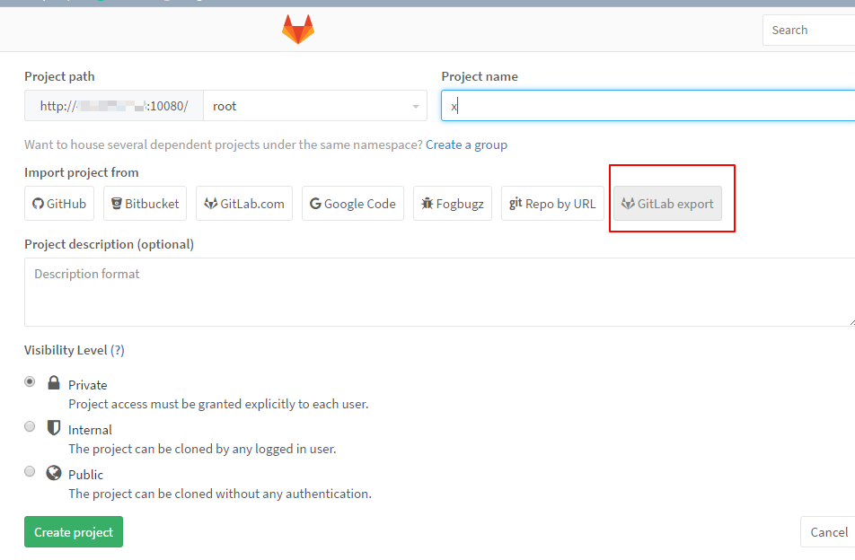
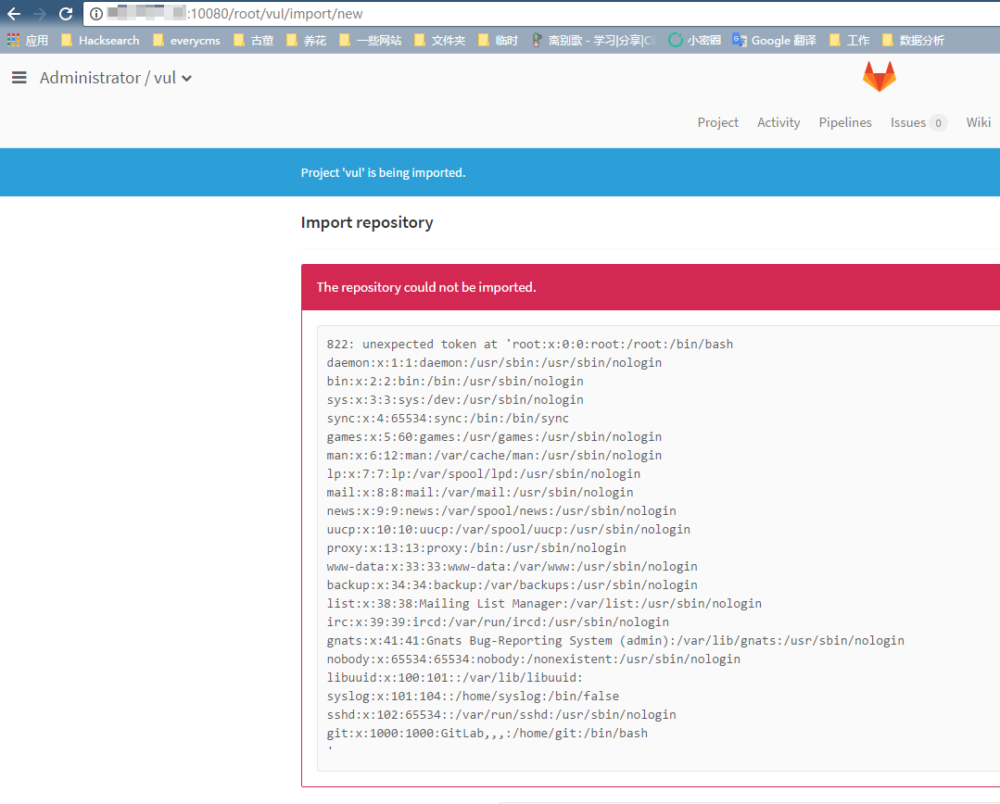

GitLab Arbitrary File Disclosure (CVE-2016-9086)¶
GitLab is a web-based DevOps lifecycle tool that provides a Git repository manager providing wiki, issue-tracking and continuous integration and deployment pipeline features.
Jobert Abma from HackerOne disclosed a critical security flaw in the "import/export project" feature of GitLab. Added in GitLab 8.9, this feature allows a user to export and then re-import their projects as tape archive files (tar). All GitLab versions prior to 8.13.0 restricted this feature to administrators only. Starting with version 8.13.0 this feature was made available to all users.
This feature did not properly check for symbolic links in user-provided archives and therefore it was possible for an authenticated user to retrieve the contents of any file accessible to the GitLab service account. This included sensitive files such as those that contain secret tokens used by the GitLab service to authenticate users. Please see the issue for more details.
References:
- https://about.gitlab.com/releases/2016/11/02/cve-2016-9086-patches/
- https://hackerone.com/reports/178152
- http://paper.seebug.org/104/
Vulnerable environment¶
Execute following command to start a GitLab Community Server 8.13.1:
docker compose up -d
After the server is started, browse the http://your-ip:8080 to see the website, the credentials of default administrator account are root and vulhub123456.
Exploit¶
Signup and signin an account, then click the "GitLab export" button on the project creation page:

Uploaded the file test.tar.gz, and the file /etc/passwd is disclosed:
